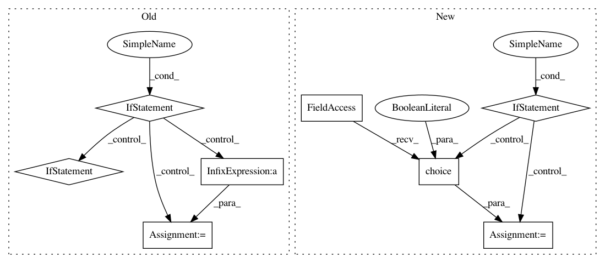

070003f70129fd8dd88364df6d2ae64c1d2a35f8,spynnaker/pyNN/models/neural_projections/connectors/fixed_number_post_connector.py,FixedNumberPostConnector,_get_post_neurons,#FixedNumberPostConnector#,28
Before Change
return self._get_delay_variance(self._delays, None)
def _get_post_neurons(self):
if self._post_neurons is None:
n = 0
while (n < self._post_n):
permutation = numpy.arange(self._n_post_neurons)
for i in range(0, self._n_post_neurons - 1):
j = int(self._rng.next(
n=1, distribution="uniform",
parameters=[0, self._n_post_neurons]))
(permutation[i], permutation[j]) = (
permutation[j], permutation[i])
n += self._n_post_neurons
if self._post_neurons is None:
self._post_neurons = permutation
else:
self._post_neurons = numpy.append(
self._post_neurons, permutation)
self._post_neurons = self._post_neurons[:self._post_n]
self._post_neurons.sort()
return self._post_neurons
def _post_neurons_in_slice(self, post_vertex_slice):
post_neurons = self._get_post_neurons()
After Change
// Loop over all the pre neurons
for m in range(0, self._n_pre_neurons):
if self._post_neurons[m] is None:
self._post_neurons[m] = numpy.random.choice(
self._n_post_neurons, self._n_post, False)
self._post_neurons[m].sort()
// This looks nice but it doesn"t work with PyNN 0.9 ?
// n = 0
// while (n < self._post_n):
// permutation = numpy.arange(self._n_post_neurons)
// for i in range(0, self._n_post_neurons - 1):
// j = int(self._rng.next(
// n=1, distribution="uniform",
// parameters=[0, self._n_post_neurons]))
// (permutation[i], permutation[j]) = (
// permutation[j], permutation[i])
// n += self._n_post_neurons
// if self._post_neurons[m] is None:
// self._post_neurons[m] = permutation
// else:
// self._post_neurons[m] = numpy.append(
// self._post_neurons, permutation)
// self._post_neurons[m] = self._post_neurons[m][:self._post_n]
// self._post_neurons[m].sort()
return self._post_neurons
def _post_neurons_in_slice(self, post_vertex_slice, n):
post_neurons = self._get_post_neurons()
In pattern: SUPERPATTERN
Frequency: 3
Non-data size: 8
Instances
Project Name: SpiNNakerManchester/sPyNNaker
Commit Name: 070003f70129fd8dd88364df6d2ae64c1d2a35f8
Time: 2017-11-24
Author: andrew.gait@manchester.ac.uk
File Name: spynnaker/pyNN/models/neural_projections/connectors/fixed_number_post_connector.py
Class Name: FixedNumberPostConnector
Method Name: _get_post_neurons
Project Name: theislab/scanpy
Commit Name: cd93c5446a236ed76456b188579e671d0619f333
Time: 2017-07-21
Author: f.alex.wolf@gmx.de
File Name: scanpy/preprocessing/simple.py
Class Name:
Method Name: subsample
Project Name: idaholab/raven
Commit Name: 349f73597017d85c1efcd88dd5dc06ea4212a2ac
Time: 2020-07-06
Author: diego.mandelli@inl.gov
File Name: framework/Optimizers/parentSelectors/parentSelectors.py
Class Name:
Method Name: tournamentSelection